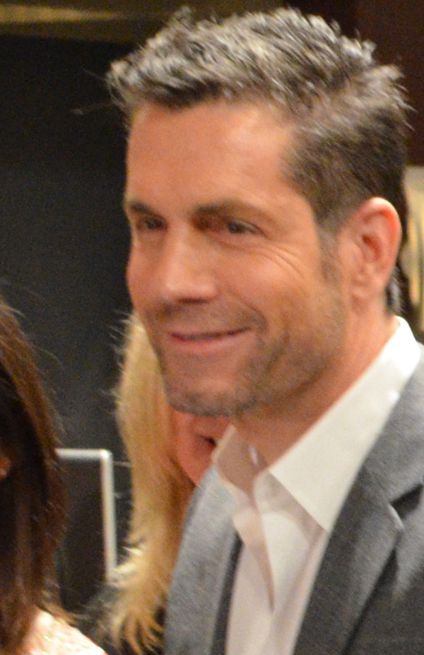

Fast Facts
The Roles
Dr. Patrick Drake
The cocky neurosurgeon with a heart of gold. Half of the supercouple "Scrubs" with Robin Scorpio, son of rock legend Noah Drake (Rick Springfield) - Patrick grew from resident playboy to devoted husband and father to Emma over ten years in Port Charles.
2005 - 2016Billy Abbott
Genoa City's charming screw-up, forever chasing redemption. Thompson took over the role in 2016 and made it his own - and won a Daytime Emmy for it in 2020.
2016 - presentThe Journey
Born in St. Albert, Alberta. Discovered at 16 by a model scout while working at an Edmonton restaurant.
Leaves home at 18 to model. Runway, print, and commercials follow - including three iconic Gap TV spots in 1999 ("Everybody in Cords," "Everybody in Leather," "Everybody in Vests").
Commits to acting: guest spots on Felicity, Flipper, and Castle, plus film leads in Wishmaster: The Prophecy Fulfilled and Divide, and stage work in Los Angeles.
Joins General Hospital as Dr. Patrick Drake in December. Becomes an original cast member of the primetime spin-off GH: Night Shift in 2007.
Plays original GH character Dr. Steve Hardy in a flashback for the show's 52nd anniversary. Marries longtime girlfriend Paloma Jonas in San Pancho, Mexico. Announces his exit from GH in October; final episode airs January 7, 2016.
Debuts as Billy Abbott on The Young and the Restless on January 14. Welcomes a son in May; a daughter, Rome Coco, arrives in September 2017.
Wins the Daytime Emmy Award for Outstanding Lead Actor in a Drama Series for Y&R.
Awards
- 2020 - WON: Lead Actor, The Young and the Restless
- 2011 - Supporting Actor, General Hospital
- 2012 - Supporting Actor, General Hospital
- 2013 - Lead Actor, General Hospital
- 2014 - Lead Actor, General Hospital
- 2015 - Lead Actor, General Hospital
- 2022 - Lead Actor, The Young and the Restless
- 2023 - Lead Actor, The Young and the Restless